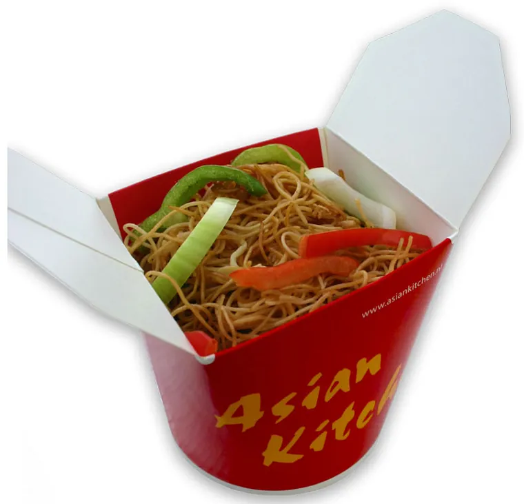
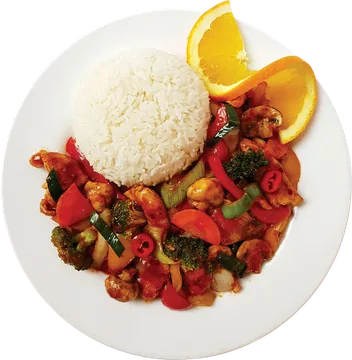

Aziatisch eten om af te halen
Noedels, nasi en wokgerechten aan de Johan Cruijff Boulevard. Vers bereid, met veel groenten, en snel klaar. Handig vóór een concert, wedstrijd of ander evenement.
- Telefonisch bestellen, zelf ophalen
- Alle kip is halal
ma–za 11:30–21:15 · zo 13:00–20:45 Johan Cruijff Boulevard 81, Amsterdam · Route

Zo bestel je
Kies je gerechten. Onthoud de nummers, bijvoorbeeld 22 of 2a.
Bel 020 365 7971. Geef je bestelling door en noem eventuele allergieën.
Spreek een afhaaltijd af. Op weg naar een evenement? Bel op tijd.
Haal je eten op. Aan de Johan Cruijff Boulevard 81. Je betaalt bij het ophalen.
We bezorgen niet. Online bestellen, betalen of reserveren kan niet.
Noedels & nasi
Gebakken eiernoedels of nasi (gebakken rijst met ei), met groenten.
Gebakken eiernoedels
-
Nummer 2a
Noedels met kip
Eiernoedels met kip en groenten.
€ 13,00
-
Nummer 3a
Noedels met rundvlees
Eiernoedels met rundvlees en groenten.
€ 14,00
-
Nummer 4a
Noedels met garnalen
Eiernoedels met garnalen en groenten.
€ 15,00
Nasi (gebakken rijst met ei)
-
Nummer 2b
Nasi met kip
Gebakken rijst met ei, kip en groenten.
€ 13,00
-
Nummer 3b
Nasi met rundvlees
Gebakken rijst met ei, rundvlees en groenten.
€ 14,00
-
Nummer 4b
Nasi met garnalen
Gebakken rijst met ei, garnalen en groenten.
€ 15,00
Kip
Met groenten en witte rijst. Alle kip is halal.
Liever eiernoedels of nasi in plaats van witte rijst? + € 2,50. Alle extra's
-
Nummer 19
Kip met kerriesaus
Met groenten en witte rijst.
€ 13,50
-
Nummer 20
Kip met zwarte bonensaus (zoutig)
Met groenten en witte rijst.
€ 13,50
-
Nummer 21
Kip zoetzuur
Met groenten en witte rijst.
€ 13,50
-
Nummer 22
Kip Szechuan (pittig)
Met groenten en witte rijst.
€ 13,50

-
Nummer 23
Kip Gong Bao (zoet en pittig)
Met groenten en witte rijst.
€ 13,50
-
Nummer 24
Kip met oestersaus
Met groenten en witte rijst.
€ 13,50
Rundvlees
Met groenten en witte rijst.
Liever eiernoedels of nasi in plaats van witte rijst? + € 2,50. Alle extra's
-
Nummer 25
Rundvlees met kerriesaus
Met groenten en witte rijst.
€ 15,50
-
Nummer 26
Rundvlees met zwarte bonensaus (zoutig)
Met groenten en witte rijst.
€ 15,50
-
Nummer 27
Rundvlees zoetzuur
Met groenten en witte rijst.
€ 15,50
-
Nummer 28
Rundvlees Szechuan (pittig)
Met groenten en witte rijst.
€ 15,50
-
Nummer 29
Rundvlees Gong Bao (zoet en pittig)
Met groenten en witte rijst.
€ 15,50
-
Nummer 30
Rundvlees met oestersaus
Met groenten en witte rijst.
€ 15,50
Garnalen
Met groenten en witte rijst.
Liever eiernoedels of nasi in plaats van witte rijst? + € 2,50. Alle extra's
-
Nummer 31
Garnalen met kerriesaus
Met groenten en witte rijst.
€ 17,50
-
Nummer 32
Garnalen met zwarte bonensaus (zoutig)
Met groenten en witte rijst.
€ 17,50
-
Nummer 33
Garnalen zoetzuur
Met groenten en witte rijst.
€ 17,50
-
Nummer 34
Garnalen Szechuan (pittig)
Met groenten en witte rijst.
€ 17,50
-
Nummer 35
Garnalen Gong Bao (zoet en pittig)
Met groenten en witte rijst.
€ 17,50
-
Nummer 36
Garnalen met oestersaus
Met groenten en witte rijst.
€ 17,50
Specialiteiten
Aanbevolen door de keuken.
Bij nr. 15, 16, 16a: eiernoedels of nasi in plaats van witte rijst? + € 2,50. Alle extra's
-
Nummer 15
Knapperige Pekingeend
Met saus van de chef en witte rijst.
€ 19,50
-
Nummer 16
Char siu
Geroosterd varkensvlees met witte rijst.
€ 17,50
-
Nummer 16a
Geroosterd buikspek
Met witte rijst.
€ 18,50
-
Nummer 17
Noedels Singapore
Noedels met char siu (geroosterd varkensvlees) en garnalen in kerriesaus.
€ 16,00
-
Nummer 18
Nasi Yeung Chow
Gebakken rijst met char siu (geroosterd varkensvlees) en garnalen.
€ 16,00
Vegetarisch
Vegetarisch volgens onze menukaart. Vegetarisch is niet hetzelfde als veganistisch.
Bij nr. 37: eiernoedels of nasi in plaats van witte rijst? + € 2,50. Alle extra's
-
Nummer 37
Roergebakken groenten
Gemengde groenten uit de wok, met witte rijst.
€ 14,50
-
Nummer 39
Nasi met ei en groenten
Gebakken rijst met ei en gemengde groenten.
€ 12,50

-
Nummer 40
Noedels met ei en groenten
Noedels met ei en gemengde groenten.
€ 12,50

-
Nummer 46
Noedelsoep met groenten
Maaltijdsoep met noedels en gemengde groenten.
€ 16,00
Extra's
Voor hoofdgerechten. Geef ze door als je belt.
Ruilen
Je krijgt dit in plaats van de witte rijst, niet erbij.
- Eiernoedels of nasi met ei in plaats van witte rijst+ € 2,50
Extra portie erbij
Een extra portie bovenop je gerecht.
- Saus+ € 2,50
- Witte rijst+ € 3,50
- Eiernoedels+ € 5,50
- Nasi met ei+ € 5,50
- Kip (halal)+ € 4,00
- Rundvlees+ € 4,50
- Garnalen (3 stuks)+ € 4,50
- Groenten+ € 4,00
- Ei+ € 2,50
Voorbeeld
- Nr. 19 met nasi in plaats van witte rijst: € 13,50 + € 2,50 = € 16,00
- Nr. 19 met een extra portie witte rijst: € 13,50 + € 3,50 = € 17,00
Twijfel je of iets kan bij jouw gerecht? Vraag het als je belt.
Noedelsoep (maaltijd)
Een grote kom soep met noedels: een volledige maaltijd. Vegetarisch? Kijk bij nr. 46.
-
Nummer 41
Wonton-noedelsoep
Met noedels en wontons gevuld met varkensvlees.
€ 14,50
-
Nummer 43
Char siu-noedelsoep
Met noedels en char siu (geroosterd varkensvlees).
€ 17,50
-
Nummer 44
Pekingeend-noedelsoep
Met noedels en Pekingeend.
€ 19,50
Soep (klein)
Een kleine soep, als voorgerecht of erbij. Zin in een hele maaltijd? Kies een noedelsoep.
-
Nummer 5
Kippensoep
€ 5,50
-
Nummer 6
Groentesoep
€ 5,50
-
Nummer 7
Wontonsoep
Heldere bouillon met wontons gevuld met varkensvlees.
€ 6,50
Bites & voorgerechten
-
Nummer 9
Kipsaté
3 spiezen.
€ 6,00
-
Nummer 11
Gestoomde kipdumplings (siu mai)
4 stuks.
€ 6,00

-
Nummer 12
Gefrituurde kipdumplings (siu mai)
4 stuks.
€ 6,00
-
Nummer 13
Mini-loempia's
6 stuks.
€ 5,00

-
Nummer 14
Krokante garnalen
2 stuks.
€ 5,50
Dranken
- Frisdrank, sap of waterCoca-Cola (regular of zero), Sprite, Fanta Orange, mangosap, Ice Tea Green, Fernandes (cherry of green punch), Spa water (zonder of met prik) € 3,50
- Red Bull € 4,50
- Bier, blikje (330 ml) € 4,50
- Bier, 25 cl € 4,50
- Bier, 50 cl € 8,00
- Tsingtao (Chinees bier) € 4,50
- Witte wijn € 5,50
- Rode wijn € 5,50
- Chinese thee € 3,50
- Koffie € 3,50
Alcohol alleen vanaf 18 jaar. We kunnen om je ID vragen.
Allergenen en dieet
- Heb je een allergie? Zeg het altijd als je belt. Twijfel je over een gerecht, bel dan eerst en vraag het aan de keuken: 020 365 7971.
- Nog geen volledige lijst online. Er staat nog geen gecontroleerde allergenenlijst per gerecht op deze site. De keuken kan je vertellen wat er in een gerecht, de saus en de bouillon zit.
- Sauzen, bouillon en extra’s kunnen allergenen bevatten die je niet aan de naam van een gerecht ziet.
- Kruisbesmetting kan voorkomen. Alles wordt in dezelfde keuken bereid. We kunnen daarom niet garanderen dat een gerecht vrij is van een allergeen.
- Halal: alle kip is halal. Dat geldt niet voor het hele menu: we bereiden ook varkensvlees, rundvlees, eend en garnalen.
- Vegetarisch betekent hier: vegetarisch volgens onze menukaart. Dat is niet automatisch veganistisch. Nr. 39 en 40 zijn bijvoorbeeld met ei.
- Pittig: het aantal pepers komt van onze menukaart. Eén peper is pittig, twee pepers is extra pittig.
Adres en openingstijden
Afhalen
Asian Kitchen Arena
Johan Cruijff Boulevard 81
1101 DL Amsterdam(voorheen Arena Boulevard)
Ga je naar een concert, wedstrijd of ander evenement? Bel op tijd, dan spreken we een afhaaltijd af.
Openingstijden
| Maandag (vandaag) | 11:30–21:15 |
|---|---|
| Dinsdag (vandaag) | 11:30–21:15 |
| Woensdag (vandaag) | 11:30–21:15 |
| Donderdag (vandaag) | 11:30–21:15 |
| Vrijdag (vandaag) | 11:30–21:15 |
| Zaterdag (vandaag) | 11:30–21:15 |
| Zondag (vandaag) | 13:00–20:45Bij een voetbalwedstrijd op zondag zijn we open vanaf 12:00. |